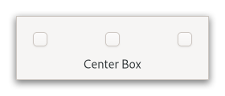

Gtk.CenterBox¶
Example¶

- Subclasses:
None
Methods¶
- Inherited:
Gtk.Widget (183), GObject.Object (37), Gtk.Accessible (17), Gtk.Buildable (1), Gtk.Orientable (2)
- Structs:
class |
|
|
|
|
|
|
|
|
|
|
Virtual Methods¶
- Inherited:
Gtk.Widget (25), GObject.Object (7), Gtk.Accessible (6), Gtk.Buildable (9)
Properties¶
- Inherited:
Name |
Type |
Flags |
Short Description |
|---|---|---|---|
r/w/en |
|||
r/w/en |
|||
r/w/en |
|||
r/w/en |
|||
r/w/en |
Signals¶
- Inherited:
Fields¶
- Inherited:
Class Details¶
- class Gtk.CenterBox(**kwargs)¶
- Bases:
- Abstract:
No
- Structure:
Arranges three children in a row, keeping the middle child centered as well as possible.
<picture> <source srcset=”centerbox-dark.png” media=”(prefers-color-scheme: dark)”> <img alt=”An example
Gtk.CenterBox" src=”centerbox.png”> </picture>To add children to
GtkCenterBox, use [method`Gtk`.CenterBox.set_start_widget], [method`Gtk`.CenterBox.set_center_widget] and [method`Gtk`.CenterBox.set_end_widget].The sizing and positioning of children can be influenced with the align and expand properties of the children.
The
GtkCenterBoximplementation of theGtkBuildableinterface supports placing children in the 3 positions by specifying “start”, “center” or “end” as the “type” attribute of a<child>element.- CSS nodes
GtkCenterBoxuses a single CSS node with the name “box”,The first child of the
GtkCenterBoxwill be allocated depending on the text direction, i.e. in left-to-right layouts it will be allocated on the left and in right-to-left layouts on the right.In vertical orientation, the nodes of the children are arranged from top to bottom.
- Accessibility
Until GTK 4.10,
GtkCenterBoxused the [enum`Gtk`.AccessibleRole.group] role.Starting from GTK 4.12,
GtkCenterBoxuses the [enum`Gtk`.AccessibleRole.generic] role.- get_baseline_position()[source]¶
- Returns:
the baseline position
- Return type:
Gets the baseline position of the center box.
See [method`Gtk`.CenterBox.set_baseline_position].
- get_center_widget()[source]¶
- Returns:
the center widget
- Return type:
Gtk.WidgetorNone
Gets the center widget.
- get_end_widget()[source]¶
- Returns:
the end widget
- Return type:
Gtk.WidgetorNone
Gets the end widget.
- get_shrink_center_last()[source]¶
- Returns:
whether to shrink the center widget after others
- Return type:
Gets whether the center widget shrinks after other children.
New in version 4.12.
- get_start_widget()[source]¶
- Returns:
the start widget
- Return type:
Gtk.WidgetorNone
Gets the start widget.
- set_baseline_position(position)[source]¶
- Parameters:
position (
Gtk.BaselinePosition) – the baseline position
Sets the baseline position of a center box.
This affects only horizontal boxes with at least one baseline aligned child. If there is more vertical space available than requested, and the baseline is not allocated by the parent then position is used to allocate the baseline with respect to the extra space available.
- set_center_widget(child)[source]¶
- Parameters:
child (
Gtk.WidgetorNone) – the new center widget
Sets the center widget.
To remove the existing center widget, pass
NULL.
- set_end_widget(child)[source]¶
- Parameters:
child (
Gtk.WidgetorNone) – the new end widget
Sets the end widget.
To remove the existing end widget, pass
NULL.
- set_shrink_center_last(shrink_center_last)[source]¶
- Parameters:
shrink_center_last (
bool) – whether to shrink the center widget after others
Sets whether to shrink the center widget after other children.
By default, when there’s no space to give all three children their natural widths, the start and end widgets start shrinking and the center child keeps natural width until they reach minimum width.
If shrink_center_last is false, start and end widgets keep natural width and the center widget starts shrinking instead.
New in version 4.12.
- set_start_widget(child)[source]¶
- Parameters:
child (
Gtk.WidgetorNone) – the new start widget
Sets the start widget.
To remove the existing start widget, pass
NULL.
Property Details¶
- Gtk.CenterBox.props.baseline_position¶
- Name:
baseline-position- Type:
- Default Value:
- Flags:
The position of the baseline aligned widget if extra space is available.
- Gtk.CenterBox.props.center_widget¶
- Name:
center-widget- Type:
- Default Value:
- Flags:
The widget that is placed at the center position.
New in version 4.10.
- Gtk.CenterBox.props.end_widget¶
- Name:
end-widget- Type:
- Default Value:
- Flags:
The widget that is placed at the end position.
In vertical orientation, the end position is at the bottom. In horizontal orientation, the end position is at the trailing edge with respect to the text direction.
New in version 4.10.
- Gtk.CenterBox.props.shrink_center_last¶
- Name:
shrink-center-last- Type:
- Default Value:
- Flags:
Whether to shrink the center widget after other children.
By default, when there’s no space to give all three children their natural widths, the start and end widgets start shrinking and the center child keeps natural width until they reach minimum width.
If false, start and end widgets keep natural width and the center widget starts shrinking instead.
New in version 4.12.
- Gtk.CenterBox.props.start_widget¶
- Name:
start-widget- Type:
- Default Value:
- Flags:
The widget that is placed at the start position.
In vertical orientation, the start position is at the top. In horizontal orientation, the start position is at the leading edge with respect to the text direction.
New in version 4.10.